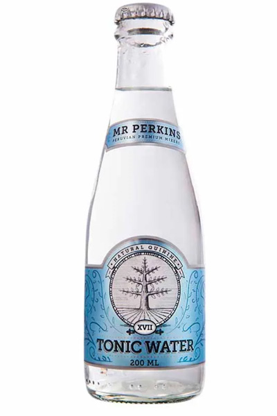

Coloca el jugo de las frambuesas en un vaso y luego agrega el jugo de limón. Añade azucar y revuelve hasta disolver. Agrega el hielo la ginebra y el agua tónica. Revuelve la preparación y sirve en un vaso con una rodaja de limón.
Coloca las ramitas de menta en un vaso grande o coctelera y añade el jugo de limón y el ron. Añade el Campari, unos cubitos de hielo y agita o revuelve. En un vaso coloca hielo picado, agua tónica y la preparación.
Pela el pepino y corta finas láminas. En un vaso coloca agua tónica, ginebra, azúcar y jugo de limón. Para terminar, agrega dentro del vaso una o dos láminas de pepino.
Combine vodka, Chartreuse y jarabe. Vuelca la preparación entre 2 vasos llenos de hielo y agrega agua tónica. Decora con romero y limón.
En un vaso escarchado con limón y sal, coloca tequila y agua tónica. Exprime 1 ó 2 rodajas de limón en cada vaso. Mezcla suavemente. Sirve inmediatamente.
Espresso tonic, y no es más que una increíble combinación de café espresso y tónica, y que además se consume completamente frío.
Llenar el vaso de hielos, añadir el vodka, el jugo de limón, después la cerveza o ginger ale y mezclar con una cuchara mezcladora. Decorar con un cuarto de limón amarillo.
En una mezcladora coctelera, coloque la fresa picada.Vierta el licor de flor de saúco y la ginebra. Añada hielo y agite durante unos 20 segundos. Agregua Agua tonica y sirva.

Mezclar gin, jugo de limón y azúcar en un vaso. Vertemos la mezcla de ginebra y limón en un vaso con hielo. Rellenamos con la soda y rematamos con una hojita de hierbabuena..